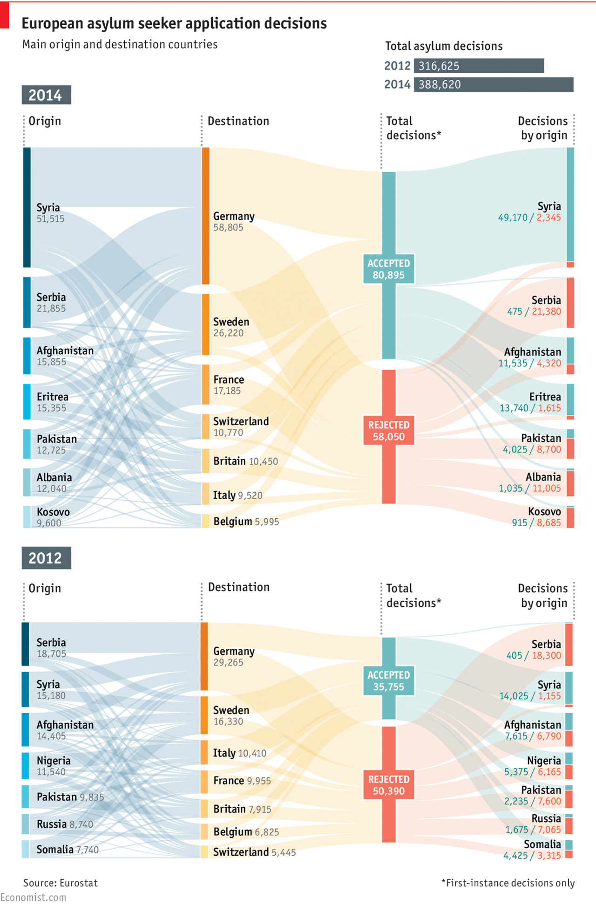
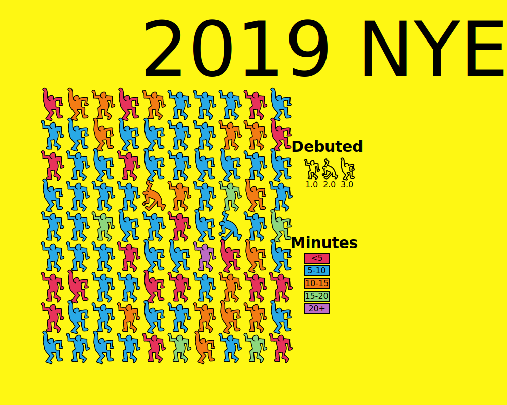
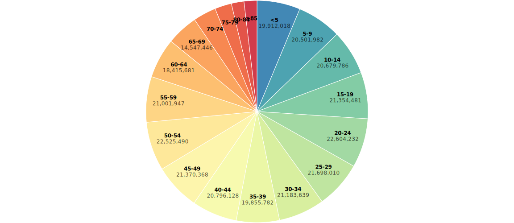
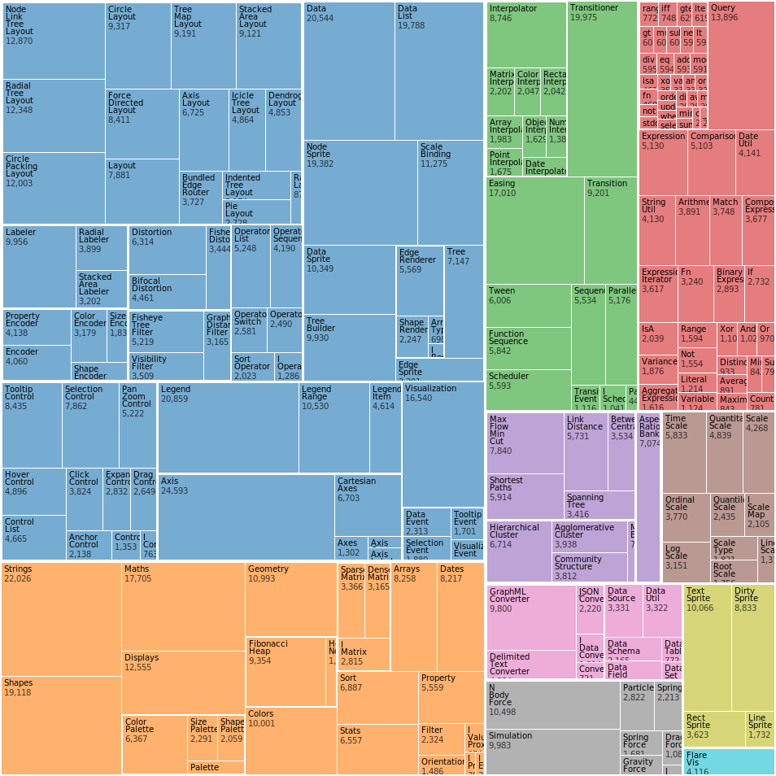

Post
Common charts and graphs

Presenting data in the form of a chart or graph makes identifying patterns and understanding difficult concepts easier. Visualizations of data can bring out insights to someone looking at the data for the first time, as well as convey findings to others who won’t see, or take the time to parse, the raw data.
Deciding on which chart is best for your data will depend on multiple factors, such as:
-
What are the types of metrics, features, or other variables that you plan on plotting?
-
Who is the audience that you plan on presenting to – is it just an initial exploration for yourself, or are you presenting to a broader audience?
-
What is the kind of conclusion that you want the reader to draw?
In this article, we’ll look at frequently used charts and graphs to help you make the best choice for presenting your data.
Alluvial diagram
The alluvial diagram is useful for showing changes over time across categories. Each group of stacked bars represents a variable while the size of each segment represents how many observations in the dataset belong to that segment. The colored flows between the bars represent a group of observations between each variable of the flow. The thickness of the flow indicates how many observations belong to that group. In the example above, countries are represented by each bar and the flow tracks refugees as they change countries. Alluvial diagrams are named after alluvial fans.
Area chart
Apple Inc. (AAPL) closing stock price
An area chart, or area graph, is a variation on a basic line graph in which the area underneath the line is shaded to represent the total value of each data point. When several data series must be compared on the same graph, stacked area charts are used.
This method of data visualization is useful for showing changes in one or more quantities over time, as well as showing how each quantity combines to make up the whole. Stacked area charts are effective in showing part-to-whole comparisons.
World electricity production, by source
A stacked area chart stacks values so that the cumulative area represents 100%. These charts can help to show a progression and composition over time, and the 100% stacked area chart is meant to show the percentage that each component contributes when the cumulative total is not important.
Bar chart
English letter frequency
The classic bar chart, or bar graph, is one of the most commonly used method to present quantitative data. In this type of visualization, one axis of the chart shows the categories being compared, and the other, a measured value. The extent (length) of the bar indicates the value for that category. The baseline usually starts at zero.
Global emissions by country
A variation on the regular vertical bar chart is the horizontal bar chart. This orientation is more useful for comparing categories.
Bar Charts are distinguished from Histograms because they do not display continuous developments over an interval. Instead, the data displays discrete (categorical) data. Bar charts therefore answer the question of "how many?" in each category.
Barcode chart
Earth surface temperature anomalies
A compact way to show a distribution. In a barcode chart, line segments represent individual data points along a single axis.
Baseline chart
Stock Price Comparison
A baseline chart uses a reference point, which becomes the baseline, to compare all the other categories to. In business, the success of a project or product is often measured against a baseline number for costs, sales, or other variables. A project may exceed a baseline number or fail to meet it.
Beeswarm
Beeswarm plots are a fun, visually pleasing alternative to histograms that can be used when data is sufficiently small and you want to plot every point. A beeswarm chart is a one-dimensional chart that shows all the information on a single-axis (usually the X axis). It is similar to a strip plot, except that would-be overlapping points are separated such that each is visible.
Box and Whisker Plot
Michaelson-Morley speed of light data
A box and whisker plot, or box plot, provides a visual summary of data through its quartiles. A box plot is constructed from five values:
- The minimum value
- The 1st quartile
- The median value
- The 3rd quartile
- The maximum value
We use these values to compare how close other data values are to them.
First, a box is drawn from the first quartile to the third of the data set. A line within the box represents the median. “Whiskers,” or lines, are then drawn extending from the box to the minimum (lower extreme) and maximum (upper extreme). Outliers are represented by individual points that are in-line with the whiskers.
This type of chart is helpful in quickly identifying whether or not the data is symmetrical or skewed, as well as providing a visual summary of the data set that can be easily interpreted.
Bubble chart
Wealth and Health of Nations, 2007
A bubble chart is a variation of a scatter chart in which the data points are replaced with bubbles, and an additional dimension of the data is represented in the size of the bubbles. Just like a scatter chart, a bubble chart does not use a category axis — both horizontal and vertical axes are value axes. In addition to the x values and y values that are plotted in a scatter chart, a bubble chart also z (size) values.
Bullet chart
Proportion of COVID-19 cases (color) vs. share of population (gray), by race and age
A bullet graph is a variation of a bar graph that can act as an alternative to dashboard gauges to represent performance data. The main use for a bullet graph is to inform the viewer of how a business is performing in comparison to benchmarks that are in place for key business metrics.
In a bullet graph, the darker horizontal bar in the middle of the chart represents the actual value, while the vertical line represents a comparative value, or target. If the horizontal bar passes the vertical line, the target for that metric has been surpassed. Additionally, the segmented colored sections behind the horizontal bar represent range scores, such as “poor,” “fair,” or “good.”
Bump chart
Petrostate: Natural gas exports
A bump chart is a chart that helps you identify the change in the performance rankings over time rather than the magnitude of the values of the elements (categories).
Cartogram

Cartograms distort the shape of geographic regions so that the area directly encodes a data variable. A common example is to redraw every country in the world sizing it proportionally to population or GDP. Can be done by circles, squares or distorted maps by manipulating the initial map.
Candlestick Chart
Apple Inc. (AAPL) stock price
A candlestick chart is popular for tracking price movements on a stock exchange. In the chart above, the end points of the black line show the highest and lowest trading values during that day, while the ends of the thicker line show the open and closing price. Color indicates if the price went down or up during the day. They are visually similar to box plots, though box plots show different information.
Chord diagram

This type of diagram visualizes the inter-relationships between entities. The connections between entities are used to display that they share something in common. This makes chord diagrams ideal for comparing the similarities within a dataset or between different groups of data.
Choropleth map

A choropleth map is simply a shaded map. Specifically, it's a map that uses measured differences in shading or color or the placing of symbols inside defined areas on the map in order to indicate the average values of some property or quantity in those areas. Be careful with your color choices, as they can easily change what the map shows.
Connected scatter plot
Driving shifts into reverse
A connected scatterplot is a line chart where each data point is shown with a marker, usually a circle or dot. A cross between a scatterplot and a time series graph, the connected scatter plot helps visualize two (2) variables over time.
As shown in the chart above, Americans have until recently driven more each year than the previous one, with a few brief exceptions. In 1956, Americans of driving age drove about 4,000 miles a year, on average. Fifty years later, that figure had climbed above 10,000.
Density plot
Unemployment by industry
A density plot visualizes the distribution of data over a continuous interval or time period. This chart is a variation of a histogram that uses kernel smoothing to plot values. Kernel smoothing allows for smoother distributions by smoothing out the noise in data.
One advantage density plots have over histograms is that they're better at determining the distribution shape because they're not affected by the number of bins used (each bar used in a typical histogram). A histogram comprising of only 4 bars wouldn't produce a distinguishable enough shape of distribution as a 20 bar histogram would. Density plots have essentially infinite bins.
Diverging bar chart
Change in state population, 2010–2019 (%)
A diverging bar chart is a bar chart that has the marks for some dimension members pointing up or right, and the marks for other dimension members pointing in the opposite direction (down or left, respectively). What’s unique about a diverging bar chart is the marks flowing down or left do not necessarily represent negative values. The divergent line can represent zero, but it can also be used to simply separate the marks for two dimension members, to represent a goal, or – as often seen with survey data – to show the break between desired and undesired responses.
A drawback to using diverging bar charts is that it’s not as easy to compare the values across dimension members as it is with a grouped bar chart. If, on the other hand, your primary objective is to compare the trend of each individual dimension member, a divergent bar chart is a good option.
Difference chart
A difference chart highlights the difference between two values, typically entries vs exits. The amount is encoded as height, and the sign (surplus vs. deficit) as a solid color. In the chart above, we compare the temperatures on the same day; days when San Francisco was warmer are orange, and colder days are blue.
Donut chart 🍩
Top 20 countries by emissions
A donut chart is a pie chart with an area of the center cut out. It looks like a donut. That’s why it’s called a donut chart.
Pie charts are sometimes criticized for focusing readers on the proportional areas of the slices to one another and to the chart as a whole. This makes it tricky to see the differences between slices, especially when you try to compare multiple pie charts together. A donut chart somewhat remedies this problem by de-emphasizing the use of the area. Readers therefore focus more on reading the length of the arcs, rather than comparing the proportions between slices.
Dot density map
Dot density maps are a simple yet highly effective way to show density differences in geographic distributions across a landscape. Dot density maps have been popular for 150 years because they are easy to understand and, at a glance, show us intuitively where things clump or cluster. There are two basic types: one-to-one dot density maps (one dot represents one object or count) and one-to-many dot density maps in which one dot stands for a number of things or a value (e.g., 1 dot = 1,000 acres of wheat production).
There are at least three big advantages of dot density maps over choropleth maps:
On a dot density map you can map raw data / simple counts (e.g., number of school) or rates and ratios (e.g., number of schools per square mile).
You can use more types of data, not just enumerated data.
Dot density maps work fine in black and white, when color isn’t an option.
Dot map
World airports
Dot maps are a way of detecting spatial patterns or the distribution of data over a geographical region, by placing equally sized points over a geographical region.
Dot maps are ideal for seeing how things are distributed over a geographical region and can reveal patterns when the points cluster on the map. Dot maps are easy to grasp and can provide a quick overview of the data, but are not great for comparing exact values.
Dot plot
Surface temperature anomalies
A generalized form of the scatter plot, the dots can be placed in various coordinate systems on an x- and y-axis. A dot plot is similar to a histogram in that it displays the number of data points that fall into each category or value on the axis, thus showing the distribution of a set of data.
Frequency trails
Google search trends, 2020
Frequency trails, also known as joy plots, is a visualization method to show multiple distributions at once. Taken individually, each distribution is shown as a density curve; taken together and they overlap one another for a three-dimensional effect. They're essentially a series of layered line graphs which build up to give the impression of a 3D landscape. They owe their name to the cover of Joy Division's 1979 album Unknown Pleasures. Luis Carli provides an interactive explainer for the method in Cartographic Pleasures: Maps Inspired by Joy Division’s Unknown Pleasures Album Art.
Gantt chart
Journey into Mordor
Gantt charts are particularly common in project management, as they’re useful in illustrating a project timeline or progression of tasks. In this type of chart, tasks to be performed are listed on the vertical axis and time intervals are on the horizontal axis. Horizontal bars in the body of the chart represent the duration of each activity.
Utilizing Gantt charts to display timelines can be incredibly helpful, and enable team members to keep track of every aspect of a project. Even if you’re not a project management professional, familiarizing yourself with Gantt charts can help you stay organized.
Gantt charts were designed and popularized by Henry Gantt around the years 1910–1915.
Glyph chart
Animals in the zoo
Glyph charts are a common form of visual design where data is depicted by a collection of visual objects referred to as glyphs. In the context of data visualization, a glyph is any marker, such as an arrow, dot, or symbol, used to specify part of a visualization. The design of glyphs can make use of many different visual channels such as shape, color, texture, size, orientation, aspect ratio or curvature.
A major strength is that patterns of multivariate data involving more than two attribute dimensions can often be more readily perceived in the context of a spatial relationship, whereas many techniques for spatial data such as direct volume rendering find difficult to depict with multivariate or multi-field data, and many techniques for non-spatial data such as parallel coordinates are less able to convey spatial relationships encoded in the data.
Grid map
Percent change in population from 2010 to 2019
A grid map, also known as a tile grid, represents regions using equal-sized blocks instead of precise geographic boundaries. This provides equal visual attention to all. Complex grid maps contain entire charts within each block, from an area chart to a Sankey diagram.
Grid maps are excellent for comparing data across regions, especially when they vary in size or importance. Unlike regular maps, which make larger areas seem more significant, grid maps give equal space to every region, making it easier to compare data and spot trends, such as election results, or shifts in population across states or countries. In short, they are:
- Easy to understand: They are less cluttered, so it’s easier to compare information across regions or categories.
- Minimize bias: Grid maps remove the visual bias that larger areas might otherwise create in traditional maps.
- Fair comparison: Each region is the same size, so the data— rather than its size or importance — stands out.
- Highly customizable: You can add colors, labels, and other details to help your visualization tell a clear and compelling story.
Heatmap
Steph Curry popcorn ratings
Heat maps visualize data through variations in coloring. When used like a table, heat maps are useful for cross-examining multivariate data, by placing variables in the rows and columns and coloring each cell within the table. Heat maps are good for showing variance across multiple variables, revealing any patterns, displaying whether any variables are similar to each other, and for detecting if any correlations exist in-between them.
There are many possible applications of heat maps. For example, if you want to analyze which time of day a retail store makes the most sales, you can use a heat map that shows the day of the week on the vertical axis and time of day on the horizontal axis. Then, by shading in the matrix with colors that correspond to the number of sales at each time of day, you can identify trends in the data that allow you to determine the exact times your store experiences the most sales. Or you can visualize popcorn quality by NBA arena.
Histogram
Apple Inc. (AAPL) trading volume
A histogram looks like a bar chart, but it reads differently. The baseline is continuous instead of discrete categories, which allows one to see distributions. Histograms help give an estimate as to where values are concentrated, what the extremes are and whether there are any gaps or unusual values. They are also useful for giving a rough view of the probability distribution.
Histograms are especially useful for showing the frequency of a particular occurrence. For instance, if you’d like to show how many clicks your website received each day over the last week, you can use a histogram. From this visualization, you can quickly determine which days your website saw the greatest and fewest number of clicks.
Horizon graph
Unemployment rate by industry
A horizon chart is a compact version of an area chart. It's a bit like an area chart that is sliced into equal horizontal intervals and collapsed down into single bands, which makes the graph more compact.
Horizon charts are especially useful when you are visualizing time series data that are so close in value so that the data marks in, for example, a line chart, would lie atop each other. … the purpose of the horizon chart is not necessarily to enable readers to pick out specific values, but instead to easily spot general trends and identify extreme values.
- Jonathan Schwabish
Line chart
Historical Debt Outstanding
A line chart, also referred to as a line graph or a line plot, connects a series of data points using a line. This chart type presents sequential values to help you identify trends. Most of the time, the x-axis (horizontal axis) represents a sequential progression of values. The y-axis (vertical axis) then tells you the values for a selected metric across that progression. This is a common chart and is great to use when you want to show data over time. One use case could be tracking the interest of consumers in a type of product or service throughout the year to make predictions for the year ahead.
Lollipop chart
English letter frequency
A lollipop chart is a type of graph that is similar to a bar chart, but uses a line and a dot instead of a bar. The dot represents the value, and the line is anchored from the x-axis. The lollipop chart is often claimed to be useful compared to a normal bar chart, if you are dealing with a large number of values and when the values are all high, such as in the 80-90% range (out of 100%). Then a large set of tall columns can be visually aggressive.
This chart has some disadvantages: the center of the circle at the end of the lollipop marks the value, but the location of the centre is difficult to judge, making it imprecise compared to the straight edge of a bar, and half of the circle extends beyond the value that it represents, making it inaccurate.
Mosaic plot
Fruit salad sales
Also known as a Marimekko diagram, this chart uses the width and height of rectangles to represent separate variables. It can be useful to represent multidimensional data. The main flaws of Marimekko charts are that they can be hard to read, especially when there are many segments. Also, it's hard to accurately make comparisons between each segment, as they are not all arranged next to each other along a common baseline. Therefore, Marimekko charts are better suited for giving a more general overview of the data.
Network graph
The complete ARPANET, December 1969
This type of visualization shows how things are interconnected through the use of nodes and link lines. Typically, nodes are drawn as dots or circles, but icons can also be used. Links are usually displayed as lines connecting nodes. However, in more elaborate network diagrams, not all of the nodes and links are created equally: additional variables can be shown by making the node size or link stroke weight proportional to an assigned value.
There are many use cases for network diagrams, including depicting social networks, highlighting the relationships between employees at an organization, or visualizing product sales across geographic regions.
Organogram

An organogram is an organizational chart that shows the structure of an organization and the relationships and relative ranks of its parts and positions/jobs. A variation is a tree diagram, which shows the different elements of a field of knowledge or a group of languages.
Packed bubble chart

Circle size represents data like with a bubble chart, but there is typically no x-y axis. Instead, bubble position often represents grouping or is used to maximize space.
Parallel coordinates
Cars from the 70s & 80s

Parallel coordinate plots are ideal for comparing many variables together and seeing the relationships between them. In the above example, models of cars produced in the 1970s and '80s are compared across multiple variables. Chris Evans created a more elaborate example using the same data set.
In a parallel coordinates plot, each variable is given its own axis and all the axes are placed in parallel to each other. Each axis can have a different scale, as each variable works off a different unit of measurement, or all the axes can be normalized to keep all the scales uniform. Values are plotted as a series of lines that connected across all the axes. This means that each line is a collection of points placed on each axis, that have all been connected together.
Parallel sets

Parallel Set charts are similar to Sankey Diagrams in the way they show flow and proportions. However, Parallel Sets don’t use arrows and they divide the flow-path at each displayed line-set. Each line-set corresponds to a dimension/dataset, which its values/categories are represented in each line divide in that line-set. The width of each line and the flow-path that stems from it is determined by the proportional fraction of the category total. Each flow-path can be colored to show and compare the distribution between different categories.
Percentogram
The “percentogram” is a histogram binned by percentages of the cumulative distribution, rather than using fixed bin widths. Put simply, it is like a histogram or density plot in that is shows the overall shape of the distribution, where each bar is made to have the same area and to specifically represent a chosen percentage. A percentogram makes it easy to assess how much of a distribution is falling in particular ranges.
Pictogram
Phish set list, NYE 2019
Pictogram, or pictograph, charts use icons to give a more engaging overall view of small sets of discrete data. Typically, the icons represent the data’s subject or category. Each icon can represent one unit or any number of units (e.g. each icon represents 10). Data sets are compared side-by-side in either columns or rows of icons, to compare each category to one another.
Pictogram charts are particularly useful for presenting simple data in a more visual and engaging way. These charts use icons to visualize data, with each icon representing a different value or category. For example, data about time might be represented by icons of clocks or watches. Each icon can correspond to either a single unit or a set number of units (for example, each icon represents 100 units).
Pie chart
United States population, 2015
Pie charts are one of the most common and basic data visualization techniques, used across a wide range of applications. Pie charts are ideal for illustrating proportions, or part-to-whole comparisons.
Pie charts help show proportions and percentages between categories by dividing a circle into proportional segments. The length of each arc represents a proportion of each category, while the full circle represents the total sum of all the data, equal to 100%.
Because pie charts are relatively simple and easy to read, they’re best suited for audiences who might be unfamiliar with the information or are only interested in the key takeaways. For viewers who require a more thorough explanation of the data, pie charts fall short in their ability to display complex information.
Proportion Plot
Who owns Britain?
Pioneered by Stephanie Evergreen, proportion plots are useful to highlight differences between the share of a population across two metrics. It uses length on the left and right side of the chart and connects the lengths by a band in the middle that swoops a lot if there is disproportionality and stays pretty even if the proportions are the same. In the above chart we examine Richard Speigal’s “Who owns Britain?” chart, highlighting age class inequalities in Britain.
Population Pyramid chart
Population of Qatar, 2019
A population pyramid chart is a pair of back-to-back histograms (for each sex) that displays the distribution of a population in all age groups and in both sexes. The X-axis is used to plot population numbers and the Y-axis lists all age groups.
Radar chart

Radar charts (also known as spider chart, web chart, polar chart, or star plots) are a way of comparing multiple quantitative variables. This makes them useful for seeing which variables have similar values or if there are any outliers among each variable. Radar Charts are also useful for seeing which variables are scoring high or low within a dataset, making them ideal for displaying performance.
Renko chart
Renko charts capture relevant periods of activity of a time series by adding a “brick” of a fixed horizontal and vertical size each time the value ventures too far away from the current brick. The time axis is compressed during periods of minor change, and conversely expanded during more active periods, allowing the user to focus on actual change.
Renko charts seem to be used mainly (or solely?) in FOREX trading, a domain that is definitely foreign to me. For comparison, here is the same plot on the traditional linear time scale:
Sankey diagram

Sankey Diagrams display flows and their quantities in proportion to one another. Typically used to show the transfer of energy, money or materials, but they can be used to show the flow of any isolated process in a system. The width of the arrows or lines are used to show their magnitudes, so the bigger the arrow, the larger the quantity of flow. Flow arrows or lines can combine together or split through their paths on each stage of a process. Color can be used to divide the diagram into different categories or to show the transition from one state of the process to another.
Scatter plot
The relative harm of drugs
Also known as a scatter graph, point graph, X-Y plot, scatter chart or scattergram. A scatter plot displays data for two variables as represented by points plotted against the horizontal and vertical axis. This type of data visualization is useful in illustrating the relationships that exist between variables and can be used to identify trends or correlations in data.
Scatter plots are most effective for fairly large data sets, since it’s often easier to identify trends when there are more data points present. Additionally, the closer the data points are grouped together, the stronger the correlation or trend tends to be.
Shockwave chart
The shockwave created by the explosion of the Hunga Tonga–Hunga Haʻapai volcano on January 15th, 2022, shown as a series of geodesic circles of increasing radius.
When the speed of a source equals the speed of sound (v = c) the wave fronts cannot escape the source. The resulting pile of waves forms a large amplitude "sound barrier" that makes sustained flight at this speed difficult and risky.
Slope chart
Government spending as a percentage of gross domestic product
Also known as a slopegraph, this type of chart shows change in rank between two (or a few) discrete points in time. Typically used to compare changes over time for a list of nouns (e.g. countries) located on an ordinal or interval scale (e.g. GDP).
A slope chart with intermediate values. Edward Tufte is credited with creating the slop chart.
Small multiples
Comparing MPG by vehicle type
Small multiples use the same basic graphic or chart to display different slices of a data set. Small multiples can show rich, multi-dimensional data without trying to cram all that information into a single, overly-complex chart. Small multiples go by many names, including Trellis chart, lattice chart, grid chart, and panel chart. I would even argue that sparklines are a simpler, smaller cousin of small multiples.
Spiral chart

This type of visualization plots time-based data along an Archimedean spiral. The graph begins at the centre of a spiral and then progresses outwards. Spiral Plots are versatile and can use bars, lines or points to be displayed along the spiral path.
Square pie chart
Square charts, also called waffle charts, are a form of pie charts that use squares instead of circles to represent percentages. Similar to basic circular pie charts, square pie charts take each percentage out of a total 100%. They are often 10 by 10 grids, where each cell represents 1%. Despite the name, circles, pictograms (such as of people), and other shapes may be used instead of squares. One major benefit to square charts is that smaller percentages, difficult to see on traditional pie charts, can be easily depicted.
Stacked area chart
Unemployment by industry
Stacked area graphs work in the same way as regular area graphs, except for the use of multiple data series that start each point from the point left by the previous data series. The entire graph represents the total of all the data plotted. Stacked area graphs also use the areas to convey whole numbers, so they do not work for negative values. Overall, they are useful for comparing multiple variables changing over an interval.
Stacked bar chart
Unemployment by industry
Stacked bar graphs are used to show how a larger category is divided into smaller categories and what the relationship of each part has on the total amount.
Stem and Leaf plot
Caltrain’s Palo Alto station schedule
A stem and leaf plot is a special table where each data value is split into a "stem" (the first digit or digits) and a "leaf" (usually the last digit). The "stem" values are listed down, and the "leaf" values go right (or left) from the stem values. The "stem" is used to group the scores and each "leaf" shows the individual scores within each group.
In the example above, the stem is the hour of the day and the leaf is the minute of when a Caltrain running southbound (left) or northbound (right) is scheduled to arrive. The color of each leaf encodes the type of train arriving.
Step chart
WeWork valuation
A step chart is a type of data visualization that displays data points in a way that emphasizes changes over time. Unlike line charts, where data points are connected with straight lines, step charts display horizontal and vertical lines, creating a “stair-step” effect. This method is particularly useful for representing discrete changes, such as values that remain constant over intervals and then jump to a new level.
Step charts are effective for showing how a value changes over time, especially when the data is not continuous. They are commonly used in scenarios like stock prices, website visits, or any metric that changes at specific intervals.
Streamgraph
Unemployment by industry
Stream graphs display the changes in data over time of different categories through the use of flowing, organic shapes that somewhat resemble a river-like stream. This makes stream graphs aesthetically pleasing and more engaging to look at. In a stream graph, the size of each individual stream shape is proportional to the values in each category.
Strip plot
English letter frequency
Dots are placed along a single continuous scale to show distribution along the corresponding variable. The radius of each dot is encoded, so frequent letters are larger than infrequent letters.
Table
| Month | Maximum temperature (°C) | Minimum temperature (°C) | Days of air frost (days) | Sunshine (hours) | Rainfall (mm) | Days of rainfall ≥1 mm (days) | Monthly mean wind speed (knots) |
|---|---|---|---|---|---|---|---|
| January | 6.66 | 1.21 | 11.32 | 47.51 | 121.53 | 15.43 | 10.77 |
| February | 7.16 | 1.13 | 10.69 | 71.93 | 96.15 | 13.18 | 10.77 |
| March | 9.22 | 2.19 | 7.84 | 109.24 | 85.10 | 12.68 | 10.28 |
| April | 12.03 | 3.75 | 4.03 | 155.38 | 71.73 | 11.59 | 9.33 |
| May | 15.13 | 6.25 | 1.20 | 192.21 | 70.98 | 11.24 | 8.75 |
| June | 17.68 | 9.08 | 0.07 | 171.48 | 77.20 | 11.51 | 8.16 |
| July | 19.62 | 11.02 | 0.00 | 173.39 | 82.48 | 12.25 | 7.85 |
| August | 19.30 | 10.97 | 0.01 | 161.64 | 93.73 | 12.89 | 7.88 |
| September | 16.85 | 9.04 | 0.12 | 127.49 | 90.89 | 12.08 | 8.41 |
| October | 13.08 | 6.42 | 1.64 | 91.82 | 122.56 | 14.83 | 9.30 |
| November | 9.41 | 3.56 | 5.51 | 57.94 | 123.39 | 15.81 | 9.74 |
| December | 7.02 | 1.42 | 10.95 | 42.71 | 127.19 | 15.60 | 10.06 | Annual | 12.79 | 5.53 | 53.36 | 1402.73 | 1162.93 | 159.08 | 9.27 |
Visually plain and boring. Often exactly what you want.
Timetable

Timetables are used as a referencing and management tool for scheduled events, tasks and actions to take place. Timetables are commonly used to display the arrival and departure time of trains and other forms of transportation.
Ternary plot
A ternary plot, triangle plot, simplex plot, or Gibbs triangle are used to visualize systems with three components. They look like this: △.
Ternary diagrams allow you to represent the relative proportions of three components in a system. In order to plot data on a ternary diagram, the components are normalized to 100% (i.e., you must determine the proportions of each component relative only to the other components represented on the diagram; more on that later).
Ternary diagrams are particularly popular in the Earth sciences. Many Earth materials and systems can be represented by three components, creating an easy way to classify minerals, sediments, rocks, and landforms. Many sub-disciplines in Earth science have developed standardized ternary plots that were created from observational or empirical data, including:
- Geochemistry: trends in chemical components with respect to space or time
- Igneous petrology: classification of rock types; phase diagrams
- Sedimentology: classification of carbonate and clastic rock types
- Mineralogy: mineral classification (e.g., feldspar, pyroxene)
- Soils: soil texture classification
- Geomorphology: dune or delta morphology; hydraulic geometry

Timeline
World History Timeline
A timeline shows a list of events in chronological order. The events may be placed on a scale or in chronological order without a scale. Timelines are useful for telling a story of events over time. They’re typically linear, with key events outlined along the axis. Timelines are used to communicate time-related information and display historical data.
Timelines allow you to highlight the most important events that occurred, or need to occur in the future, and make it easy for the viewer to identify any patterns appearing within the selected time period. While timelines are often relatively simple linear visualizations, they can be made more visually appealing by adding images, colors, fonts, and decorative shapes.
- For events, use concrete, positive language. Don't include non-events, such as "last chance for X to happen", when X didn't happen.
- Encourage scanning. Keep labels in vertical timelines left aligned to form a straight edge.
- Consider including the smaller events that led to the key events of the story.
- Consider alternating odd and even events on either side of the timeline axis. This helps to avoid crowding. Stay mindful of how this may affect scanning.
- Consider grouping phases in the timeline.
- Consider tooltips on events for details.
- Consider including more events in more recent history.
Treemap
Ben Shneiderman originally developed treemaps as a way of visualizing a vast file directory on a computer, without taking up too much space on the screen. This makes treemaps a more compact and space-efficient option for displaying hierarchies, that gives a quick overview of the structure. Treemaps are also great at comparing the proportions between categories via their area size.

UpSet Plots

UpSet plots show the intersections of a set as a matrix. Each column corresponds to a set, and bar charts on top show the size of the set. Each row corresponds to a possible intersection: the filled-in cells show which set is part of an intersection. Also notice the lines connecting the filled-in cells: they show in which direction you should read the plot.
Read more about the development and application of UpSet plots in the original paper.
Variable width bar chart
Commute time to work
A variable width bar chart is a type of graphical representation that differs from traditional bar charts in that the width of each bar carries significant meaning. Rather than all bars being of uniform width, as in conventional bar charts, the width of the bars in a Variable Width Bar Chart is determined by an additional dimension within the dataset.
In essence, each bar in the chart can represent a specific category, such as different product lines or demographic groups. Variable Width Bar Charts can be oriented either vertically or horizontally, depending on the preference and the nature of the data.
Vaccinations by age group
Variable width bar charts are particularly useful when visualizing data where the width of the bars provides meaningful context or insight into the underlying dataset. They can be used in scenarios such as comparing the profitability of different product lines, illustrating demographic distributions, or analyzing sales volume and profit margins.
Venn diagram
U.S. Presidents
Impeached or Resigned & Lost Popular Vote
None yet.
A Venn Diagram is a diagram that visually displays all the possible logical relationships between a collection of sets. Each set is typically represented with a circle. When sets overlap, it’s known as the intersection area. This is where entities that have all the qualities of the overlapping sets.
Waterfall Chart

A waterfall chart is a visual representation that illustrates how a value changes as it’s influenced by different factors, such as time. The main goal of this chart is to show the viewer how a value has grown or declined over a defined period. For example, waterfall charts are popular for showing spending or earnings over time.
Word clouds
A word cloud, or tag cloud, is a visual representation of text data in which the size of the word is proportional to its frequency. The more often a specific word appears in a dataset, the larger it appears in the visualization. In addition to size, words often appear bolder or follow a specific color scheme depending on their frequency.